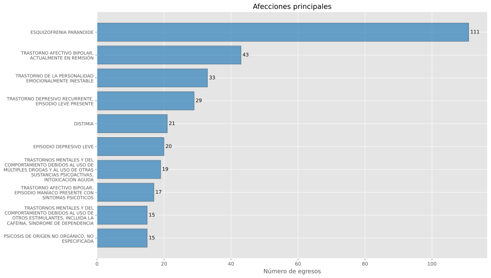
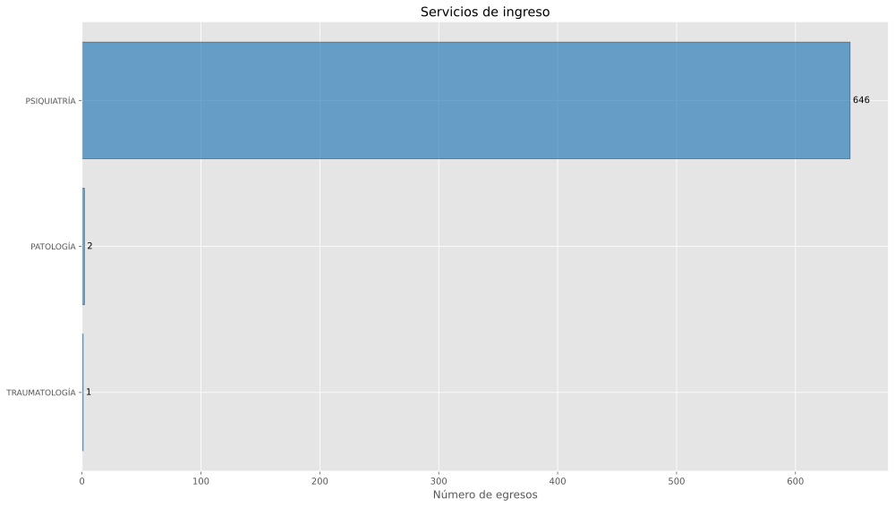
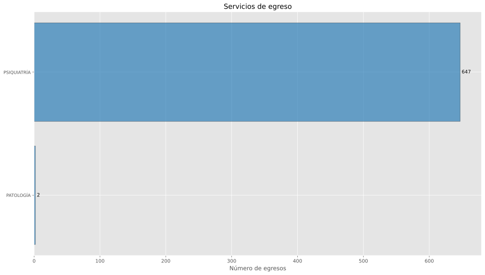
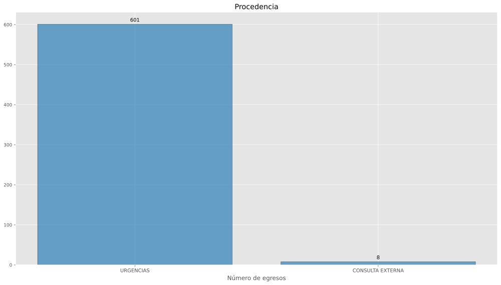
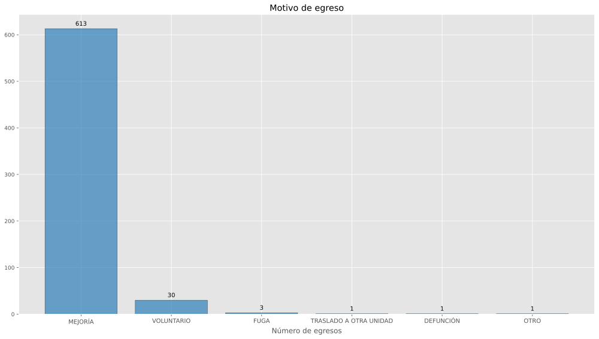

SRIMB000926
HOSPITAL
PSIQUIÁTRICO CRUZ DEL NORTE HILLO
Datos
generales del catálogo de CLUES
Con base en (DGIS, 2025a)
| Nivel de
atención: |
SEGUNDO NIVEL |
| Tipología: |
HOSPITAL PSIQUIÁTRICO |
| Subtipología: |
NO ESPECIFICADO |
| Tipo de
establecimiento: |
HOSPITALIZACIÓN |
| Estrato: |
URBANO |
| Estatus: |
EN OPERACIÓN |
| Región: |
NOROESTE |
| Entidad: |
SONORA |
| Municipio: |
HERMOSILLO |
| Localidad: |
HERMOSILLO |
| Coordenadas: |
29.0813168, -111.0050473 |
| Domicilio: |
BOULEVARD LUIS DONALDO COLOSIO No. SIN NUMERO Int.
SIN NUMERO |
|
COLONIA EL LLANO |
|
HERMOSILLO, SON |
|
CP 83210 |
| Fecha de
construcción: |
1962-11-13 |
| Fecha de inicio de
operación: |
1964-11-12 |
| Propiedad del
inmueble: |
PROPIO |
| Último
movimiento: |
ALTA |
| Fecha del último
movimiento: |
2024-07-18 |
Recursos humanos
Fecha de última actualización en SINERHIAS:
2025-07-01 (DGIS,
2025b)
Totales
Plazas para SRIMB000926
| Médicos: |
38 |
29 |
9 |
| Médicos en
adiestramiento: |
26 |
26 |
0 |
| Médicos en otras
actividades: |
4 |
4 |
0 |
| Enfermeras: |
169 |
146 |
23 |
| Enfermeras en otras
actividades: |
8 |
8 |
0 |
| Otro personal
profesional: |
38 |
38 |
0 |
| Personal
técnico: |
18 |
18 |
0 |
| Otro
personal: |
82 |
70 |
12 |
| Total recursos
humanos: |
383 |
339 |
44 |
Médicos
Plazas de médicos para SRIMB000926
| Médicos
generales: |
24 |
17 |
7 |
| Internistas: |
1 |
1 |
0 |
| Psiquiátras: |
10 |
8 |
2 |
| Odontólogos: |
1 |
1 |
0 |
| Neurólogos: |
2 |
2 |
0 |
| Total
médicos: |
38 |
29 |
9 |
Médicos en
adiestramiento
Plazas de médicos en adiestramiento para
SRIMB000926
| Médicos
pasantes: |
4 |
4 |
0 |
| Odontólogos
pasantes: |
2 |
2 |
0 |
| Médicos
residentes: |
20 |
20 |
0 |
| Médicos en
adiestramiento: |
26 |
26 |
0 |
Médicos en otras
actividades
Plazas de médicos en otras actividades para
SRIMB000926
| Médicos en labores
administrativas: |
2 |
2 |
0 |
| Médicos en enseñanza
e investigacion: |
2 |
2 |
0 |
| Total médicos en
otras actividades: |
4 |
4 |
0 |
Enfermeras
Plazas de enfermeras para SRIMB000926
| Enfermeras
generales: |
68 |
48 |
20 |
| Enfermeras
especialistas: |
74 |
73 |
1 |
| Enfermeras
pasantes: |
11 |
11 |
0 |
| Enfermeras
auxiliares: |
16 |
14 |
2 |
| Total
enfermeras: |
169 |
146 |
23 |
Enfermeras en
otras actividades
Plazas de enfermeras en otras actividades para
SRIMB000926
| Enfermeras labores
administrativas: |
2 |
2 |
0 |
| Enfermeras enseñanza
o investigación: |
1 |
1 |
0 |
| Enfermeras
otras: |
5 |
5 |
0 |
| Total enfermeras
en otras actividades: |
8 |
8 |
0 |
Otro personal
profesional
Plazas de otro personal profesional para
SRIMB000926
| Químicos: |
3 |
3 |
0 |
| Trabajo
social: |
18 |
18 |
0 |
| Psicólogos: |
17 |
17 |
0 |
| Total otro
personal profesional: |
38 |
38 |
0 |
Personal técnico
Plazas de personal técnico para
SRIMB000926
| Trabajo
social: |
18 |
18 |
0 |
| Total personal
técnico: |
18 |
18 |
0 |
Otro personal
Plazas de otro personal para
SRIMB000926
| Personal
administrativo: |
50 |
46 |
4 |
| Archivo
clínico: |
6 |
6 |
0 |
| Conservación y
mantenimiento: |
19 |
14 |
5 |
| Intendencia: |
2 |
2 |
0 |
| Otro
personal: |
5 |
2 |
3 |
| Total otro
personal: |
82 |
70 |
12 |
Área de servicios
médicos
Fecha de última actualización en SINERHIAS:
2025-07-01 (DGIS,
2025b)
Área de
consulta externa básica
- Consulta externa básica: NO
Servicio
de medicina preventiva y terapia de hidratación
oral
- Servicio de medicina preventiva y terapia de
hidratación oral: NO
- Salas de espera (familiares - pacientes):
0
- Capacidad en número de personas de las salas de
espera: 0
- Laboratorio dental: NO
Consultorios de medicina preventiva para
SRIMB000926
| Estomatología: |
1 |
1 |
0 |
| Total
consultorios medicina preventiva: |
1 |
1 |
0 |
Área de
consulta externa especialidades
- Consulta externa especialidades:
SI
Consultorios de consulta externa especialidades
para SRIMB000926
| Nutrición: |
1 |
1 |
0 |
| Psicología: |
3 |
3 |
0 |
| Psiquiatría: |
7 |
7 |
0 |
| Total
consultorios de especialidad: |
11 |
11 |
0 |
Área de urgencias
- Área de urgencias: SI
- Área de curaciones: NO
Área de urgencias para SRIMB000926
| Camas en área de
urgencias: |
3 |
3 |
0 |
Área de
tocología y tococirugía
- Área de tocología y tococirugía:
NO
Área de
neonatologia y cuneros
- Área de neonatología y cuneros:
NO
- Banco de leche: NO
Área de
hospitalización
- Área de hospitalización: SI
- Área de trabajo de enfermería:
SI
- Salas de espera (familiares - pacientes) :
0
- Capacidad en número de personas de las salas de
espera: 0
Área de hospitalización para
SRIMB000926
| Camas de
aislados: |
3 |
3 |
0 |
| Camas de
psiquiatría: |
103 |
81 |
22 |
| Total camas
censables: |
106 |
84 |
22 |
Área de unidad
quirúrgica
- Área de unidad quirúrgica: NO
Área de
recuperación postquirúrgica
- Área de recuperación postquirúrgica:
NO
Área de
unidad de cuidados intensivos
- Área de unidad de cuidados intensivos:
NO
- Área de unidad de cuidados intensivos neonatales:
NO
Área de
unidad de cuidados intermedios
- Área de unidad de cuidados intermedios:
NO
Área de cuidados
coronarios
- Área de cuidados coronarios:
NO
Áreas de terapias
- Área de inhaloterapia: NO
- Área de medicina física y rehabilitación:
NO
- Área de hidroterapia: NO
- Área de electroterapia: NO
- Área de mecanoterapia: NO
- Área de termoterapia: NO
Área de
unidad de cirugía ambulatoria
- Área de unidad de cirugía ambulatoria:
NO
- Área de recuperación de cirugía ambulatoria:
NO
Área de hemodiálisis
Centrales de
enfermería
Centrales de enfermería para
SRIMB000926
| Centrales de
enfermería: |
4 |
4 |
0 |
Planta de
tratamiento de agua
- Planta de tratamiento de agua:
NO
Unidad de terapia
oncológica
- Unidad de terapia oncológica: NO
- Área de radioterapia externa:
NO
- Área de braquiterapia_alta tasa:
NO
- Área de braquiterapia baja tasa:
NO
- Área de quimioterapia: NO
- Cuarto caliente: NO
- Bunker: NO
- Cuarto de revelado: NO
- Área de preparación de medicamentos:
NO
- Área de trabajo de enfermería:
NO
- Área de guarda de medicamentos:
NO
Área de unidad de
quemados
- Área de unidad de quemados: NO
Área
de unidad transplante de médula ósea
- Área de unidad de transplante de médula ósea:
NO
Otros servicios
médicos
- Área de hematologíaa: NO
- Sistema de flujo laminar: NO
- Área de preparación de alimentos:
NO
- Sistema de intercomunicación:
NO
- Área de clínica de medicina hiperbárica,:
NO
- Área de imagenología,: NO
- Área de urodinámia: NO
- Área de hemodinámia: NO
- Área de medicina nuclear: NO
- Área de laboratorio clínico:
SI
- Área de laboratorio de microbiología:
NO
- Área de laboratorio de radioinmunoensayo:
NO
- Área de anatomía patológica:
NO
Área de servicios de
apoyo
Fecha de última actualización en SINERHIAS:
2025-07-01 (DGIS,
2025b)
Ambulancias
Ambulancias para SRIMB000926
| Ambulancias: |
2 |
2 |
0 |
Área de banco de
sangre
- Área de banco de sangre: NO
- Capacidad de almacenamiento: 0
- Laboratorio de banco sangre:
NO
Otros servicios de
apoyo
- Área CEyE: NO
- Área centro de mezclas: NO
- Número de centros de mezclas:
0
- Área de farmacia: SI
- Área de ingeniería biomédica:
NO
Área de servicios
generales
Fecha de última actualización en SINERHIAS:
2025-07-01 (DGIS,
2025b)
- Almacén general: SI
- Casa de máquinas: SI
- Calderas: NO
- Subestación: SI
- Planta de emergencia: SI
- Talleres de reparación: NO
- Cocina: SI
- Comedor: NO
- Central de gases medicinales:
NO
- Compresoras: SI
- Aire acondicionado: SI
- Servicios de intendencia: SI
- Roperia: SI
- Lavandería: SI
- Servicio de mensajería: SI
- Servicio de vigilancia: SI
- Servicio de fotocopiado: SI
- Tratamiento de residuos sólidos:
NO
- Tratamiento de aguas residuales:
NO
- Almacénn temporal de residuos peigrosos, biólogicos
o infecciosos: NO
- Almacén de productos CRETI:
NO
- Incinerador: NO
- Sistema de desechos líquidos:
NO
- Almacén de medicamentos: NO
- Cámara fría para resguardo de insumos para la salud:
NO
- Cámaras frías fabricadas con paneles:
0
- Cámaras frias de concreto: 0
Datos generales
SINERHIAS
Fecha de última actualización en SINERHIAS:
2025-07-01 (DGIS,
2025b)
- Agua
- Servicio de agua potable: SI
- Red municipal de abastecimiento de agua:
SI
- Pozo de agua: NO
- Almacenamiento de agua por cisterna:
SI
- Otra fuente de abastecimiento de agua:
SI
- Energía eléctrica
- Servicio de energía eléctrica:
SI
- Instalación de energía eléctrica:
SI
- Sistema de paneles solares: NO
- Tierra física: SI
- Pararayos: NO
- Drenaje
- Sistema de drenaje: SI
- Fosa séptica: NO
- Gas
- Servicio de gas (tanque estacionario, natural,
otro): NO
- Baños
- Baños públicos (inodoros y mingitorios):
4
- Baños para el personal (inodoros y mingitorio):
18
- Baños para pacientes (inodoros y mingitorio):
10
- Baños para discapacitados (inodoro):
0
- Radio CB
- Telesalud
- Área específica de telesalud:
NO
- Estación para telemedicina-telesalud:
NO
- Ancho de banda disponible para servicio de
telesalud: NO TIENE
- Equipo de videoconferencia: NO
- Equipo de cómputo específico para telesalud:
NO
- Software para telemedicna-telesalud:
NO
- Expediente clínico electrónico
- Expediente clínico electrónico:
NO
- Nombre del expediente clínico electrónico: __
Corregir codificacion…__
- Infraestructura
- Metros cuadrados de terreno:
31099
- Metros cuadrados de construcción:
4383
- Metros cuadrados de superficie exterior:
23716
- Metros cuadrados de superficie jardinada:
4841
- Número de edificios que conforman el
establecimiento: 1
- Número de Niveles que tiene el establecimiento:
1
- Computadoras
- Computadoras funcionales (laptops y PC):
40
- Consultorios con computadora funcional:
13
- Computadoras funcionales en la dirección:
1
- Computadoras funcionales en la farmacia:
1
- Computadoras funcionales en el área de estadística:
0
- Computadoras funcionales en el área de informática:
0
- Internet
- Tipo de conexión a internet: REDES
INALAMBRICAS (LMDS, PLC, WIMAX)
- Ancho de banda: 1 A 50 MB
- Número de usuarios por conexión de internet:
35
- Internet pagado por: SECRETARIA DE SALUD
ESTATAL
- Internet en la dirección: SI
- Internet en la farmacia: SI
- Internet en el área de estadística:
NO
- Internet en el área de informática:
NO
- Número de consultorios con internet:
13
Egresos
hospitalarios
Con base en (DGIS, 2026)
Número de egresos por
año
Egresos por año para SRIMB000926
| SRIMB000926 |
2025 |
551 |
| SRIMB000926 |
2024 |
731 |
| SRIMB000926 |
2023 |
641 |
| SRIMB000926 |
2022 |
682 |
| SRIMB000926 |
2021 |
792 |
 Figura 1: Egresos por
año
Figura 1: Egresos por
año
Afecciones
principales (2025)
| 1 |
SRIMB000926 |
ESQUIZOFRENIA
PARANOIDE |
95 |
| 2 |
SRIMB000926 |
TRASTORNO AFECTIVO
BIPOLAR, ACTUALMENTE EN REMISIÓN |
34 |
| 3 |
SRIMB000926 |
TRASTORNO DEPRESIVO
RECURRENTE, EPISODIO LEVE PRESENTE |
25 |
| 4 |
SRIMB000926 |
TRASTORNO DE LA
PERSONALIDAD EMOCIONALMENTE INESTABLE |
23 |
| 5 |
SRIMB000926 |
EPISODIO DEPRESIVO
LEVE |
19 |
| 6 |
SRIMB000926 |
DISTIMIA |
19 |
| 7 |
SRIMB000926 |
TRASTORNOS MENTALES Y DEL
COMPORTAMIENTO DEBIDOS AL USO DE MÚLTIPLES DROGAS Y AL
USO DE OTRAS SUSTANCIAS PSICOACTIVAS, INTOXICACIÓN
AGUDA |
17 |
| 8 |
SRIMB000926 |
TRASTORNO AFECTIVO
BIPOLAR, EPISODIO MANÍACO PRESENTE CON SÍNTOMAS
PSICÓTICOS |
16 |
| 9 |
SRIMB000926 |
PSICOSIS DE ORIGEN NO
ORGÁNICO, NO ESPECIFICADA |
12 |
| 10 |
SRIMB000926 |
TRASTORNO DEPRESIVO
RECURRENTE ACTUALMENTE EN REMISIÓN |
12 |
| 11 |
SRIMB000926 |
OTROS |
279 |

Figura 2: Afecciones
principales
Servicios de ingreso
(2025)
| 1 |
SRIMB000926 |
PSIQUIATRÍA |
549 |
| 2 |
SRIMB000926 |
PATOLOGÍA |
2 |

Figura 3: Servicios de
ingreso
Servicios de egreso
(2025)
| 1 |
SRIMB000926 |
PSIQUIATRÍA |
550 |
| 2 |
SRIMB000926 |
PATOLOGÍA |
1 |

Figura 4: Servicios de
egreso
Procedencia (2025)
| 1 |
SRIMB000926 |
URGENCIAS |
544 |
| 2 |
SRIMB000926 |
CONSULTA EXTERNA |
7 |

Figura 5:
Procedencias
Motivo de egreso
(2025)
| 1 |
SRIMB000926 |
MEJORÍA |
519 |
| 2 |
SRIMB000926 |
VOLUNTARIO |
27 |
| 3 |
SRIMB000926 |
FUGA |
3 |
| 4 |
SRIMB000926 |
OTRO |
1 |
| 5 |
SRIMB000926 |
DEFUNCIÓN |
1 |

Figura 6: Motivo de
egreso
Descargas
Descargar SRIMB000926.pdf
Referencias
DGIS. (2025b).
Subsistema de
Información de Equipamiento,
Recursos Humanos e
Infraestructura para la
Atención de la Salud
(SINERHIAS). Web.
http://www.dgis.salud.gob.mx/contenidos/sinais/subsistema_sinerhias.html